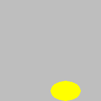

Drawing rectangles, ellipses, and circles¶
All drawing functions in the PyGame library begin with py.draw. Depending on what shape we want to draw, we call different functions. In the explanations that follow, the meaning of the parameters is:
The canvas parameter is the area in which we draw. In this guide, programs will already have a formed variable (more specifically object) canvas, obtained as the result from a call of the
pygamebg.open_windowfunction.The color parameter is the color we use to draw. As it was said earlier, a color can be specified by its name (for example
pg.Color("black")), or as a tuple or a list of 3 elements (for example[255, 0, 0]for red).The rectangle parameter is a tuple or a list of four elements \((x, y, w, h)\) or \([x, y, w, h]\), that describes a rectangle, as explained earlier (coordinates of the top-left vertex, rectangle width and height).
The center parameter represents a point. As mentioned earlier, a point can be specified as a tuple (or list) of 2 elements, which represent the coordinates of the point in the window in which we draw.
The thickness parameter is thickness of the lines we use to draw. In the functions we explain here, this parameter is optional and can be omitted.
We will now see more detailed descriptions of the functions for drawing rectangles, ellipses, and circles. A brief example of one or two lines of code is given after each function description. You can run each of these examples by copying it to the program below (which doesn’t draw anything for now). The pictures that follow the examples are obtained in that same way.
Drawing a rectangle¶
To draw a rectangle we use the function pg.draw.rect, which has two forms:
pg.draw.rect(canvas, color, rectangle, thickness)
pg.draw.rect(canvas, color, rectangle)
We use the form without the thickness parameter when we want the rectangle’s interior to be filled with the indicated color as well.
For example, the first of the following two statements means:
draw a rectangle (function rect)
paint it black (parameter (0, 0, 0) specifies black color)
The top-left vertex of the rectangle has coordinates (40, 80)
the width of the rectangle is 50 and the height is 30 pixels
only frame of the rectangle is to be drawn and the lines should be 3 pixels thick
The second statement means:
draw a rectangle (function rect)
paint it black (parameter pg.Color(“black”) also specifies black color)
The top-left vertex of the rectangle has coordinates (140, 80)
the rectangle is to be 20 pixels both wide and high, so it will actually be a square
The square will be filled with color since there is no thickness parameter
Drawing an ellipse¶
To draw an ellipse, we use the function pg.draw.ellipse, with or without the thickness parameter:
pg.draw.ellipse(canvas, color, rectangle, thickness)
pg.draw.ellipse(canvas, color, rectangle)
The rectangle parameter represents the rectangle the ellipse is inscribed in, and the other parameters have the same meaning as before. If we need it, we can calculate the center and major and minor semi-axes of the ellipse using the tuple \((x, y, w, h)\) or list \([x, y, w, h]\) that defines the rectangle. The coordinates of the center of the rectangle, which is also the center of the ellipse, are \((x + w/2, y + h/2)\), and the major and minor semi-axes of the ellipse are \(w/2\) and \(h/2\). So, for example, statement
draws a yellow filled ellipse. The center of the ellipse is the center of the specified rectangle, which is at point (130, 180). The horizontal semi-axis of the ellipse is 30 pixels long, and the vertical 20.
Drawing a circle¶
To draw a circle, we use the function pg.draw.circle, with or without the thickness parameter:
pg.draw.circle(canvas, color, center, radius, thickness)
pg.draw.circle(canvas, color, center, radius)
The center parameter is a point representing the center of the circle, and the radius parameter is a number representing the radius of the circle in pixels. For example, the following statement draws a red circle, 3 pixels thick, of radius 50 pixels, whose center is at point (100, 100):
If the last parameter (stroke width 3) had been omitted, the interior of the circle would have been red as well.
Drawing rectangles, ellipses and circles - questions¶
Check how much you understand and remember about these drawing functions:
- Top-left vertex coordinates
- Top-left vertex coordinates are specified when drawing an ellipse or a rectangle
- Radius
- Correct
- Center coordinates
- Correct
- Width and height
- Width and height are specified when drawing an ellipse or a rectangle
- Color
- Correct
Q-26: What needs to be specified when drawing a circle?
- pg.draw.circle(canvas, color, 100, 100, 30, 5)
- Try again
- pg.draw.circle(canvas, color, (100, 100), 30, 5)
- Correct
- pg.draw.circle(canvas, color, (100, 100, 30, 5))
- Try again
- pg.draw.circle(canvas, color, (100, 100), (30, 5))
- Try again
Q-27: To draw a circle centered at point \((100, 100)\), whose radius is \(30\) pixels, using line \(5\) pixel wide, which function call needs to be made?
- the latter draws an ellipse whose semi-major and semi-minor axes equal r and 1.
- Try again
- the latter fills the circle interior with color.
- Try again
- the former draws a disk (filled circle), and the latter a circular line.
- Correct
- the former draws a circular line, and the latter a disk (filled circle).
- Try again
Q-28: The difference between pg.draw.circle(canvas, color, (cx, cy), r) and pg.draw.circle(canvas, color, (cx, cy), r, 1) is that:
- Top-left vertex coordinates
- Try again
- Stroke width
- Try again
- Width
- Try again
- Height
- Try again
- Center coordinates
- Correct
Q-29: What is NOT specified when drawing a rectangle?
- pg.draw.rect(canvas, color, 100, 100, 30, 50)
- Try again
- pg.draw.rect(canvas, color, (100, 100), (30, 50))
- Try again
- pg.draw.rect(canvas, color, (100, 100), 30, 50)
- Try again
- pg.draw.rect(canvas, color, (100, 100, 30, 50))
- Correct
Q-30: To draw a rectangle whose top-left vertex is at point :math: (100, 100), \(30\) pixels wide and \(50\) pixels high, which function call needs to be made?
- pg.draw.rect(canvas, color, (80, 80, 50, 80))
- Correct
- pg.draw.rect(canvas, color, (80, 80), (130, 160))
- Try again
- pg.draw.rect(canvas, color, (80, 80, 130, 160))
- Try again
- pg.draw.rect(canvas, color, (80, 80), (50, 80))
- Try again
Q-31: To draw a rectangle whose top-left vertex is at point \((80, 80)\), and bottom-right vertex at point \((130, 160)\), which function call needs to be made:
Drawing by instructions¶
In the following tasks, you can see what your program should draw by clicking the “Play task” button. To provide you necessary information to write the statements you need, detailed instructions with descriptions of the parameters are also given.
Keep in mind that before drawing you should paint the background with the appropriate color, for which you use the statement canvas.fill(pg.Color(...)) (instead of the dots specify a color).

{kind=link}
{kind=link}
{kind=link}
Task - target:
Draw a target on a white background using three filled circles. The centers of all three circles should be at the center of the window and all circles should be filled with color. First, draw a red circle of radius 100, then a blue one of radius 75, and then a green circle of radius 50 pixels.
What do you think, could these circles be drawn in a different order? If you are not sure what would happen if the order changed, give it a try.
Task - duckling:
On a green background, draw a duckling as a cartoon character. The drawing consists of the following parts:
Head: a yellow filled ellipse, inscribed in a 320 x 300 pixel rectangle, with the top left vertex at point (40, 50)
Head border: a black ellipse framing the previous ellipse with a line of width 1
Left eye: a black filled ellipse, inscribed in a 40 x 40 pixel rectangle with the top left vertex at point (130, 130)
Right eye: a black filled ellipse, inscribed in a 40 x 40 pixel rectangle, with the top left vertex at point (280, 120)
Mouth (beak): a red filled ellipse, inscribed in a 120 x 140 pixel rectangle, with the top left vertex at point (200, 170)
Mouth border: a black ellipse framing the previous ellipse with a line of width 1
Here we have more freedom with the drawing order, but we still need to follow some order. Try to explain which parts of the image need to be drawn exactly in this order, and which need not.
Note that the eyes are inscribed in rectangles that are actually squares. How (thanks to this) can we draw the same eyes in a different way?